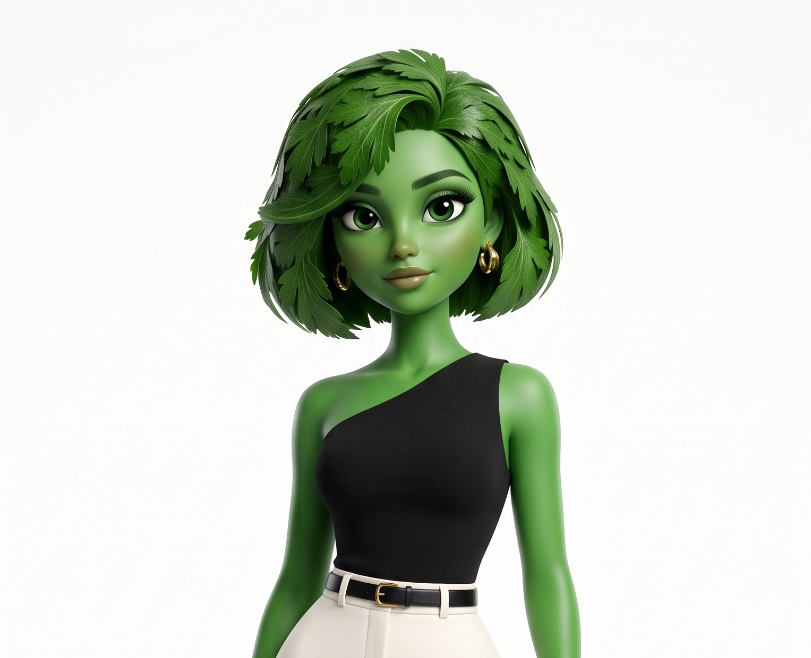
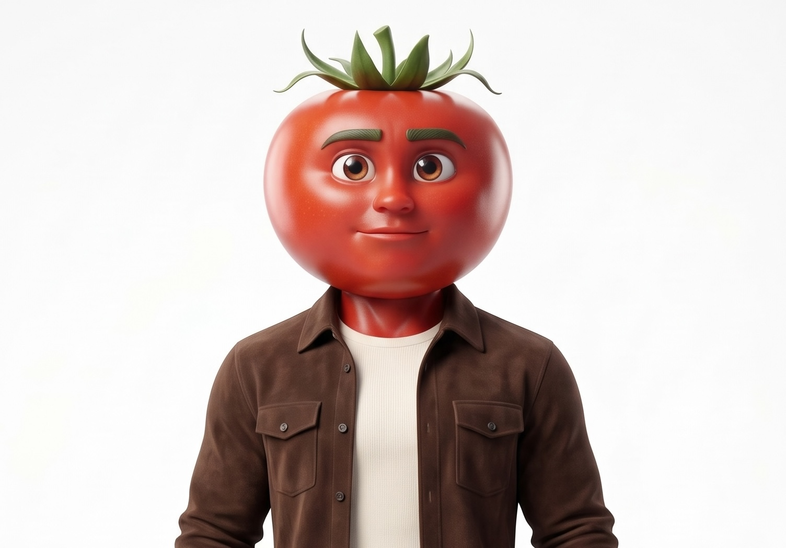
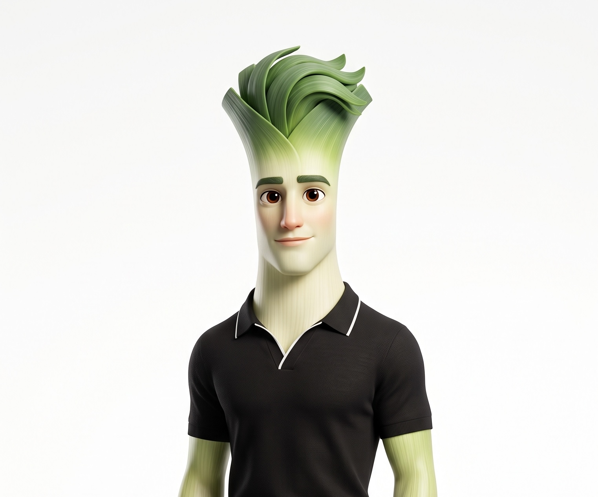
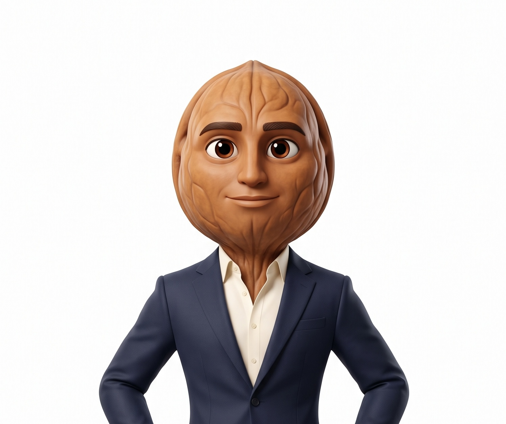
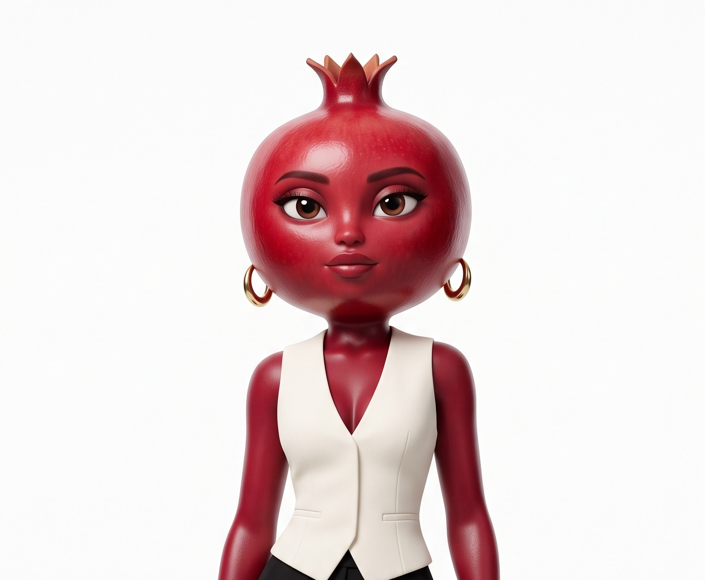
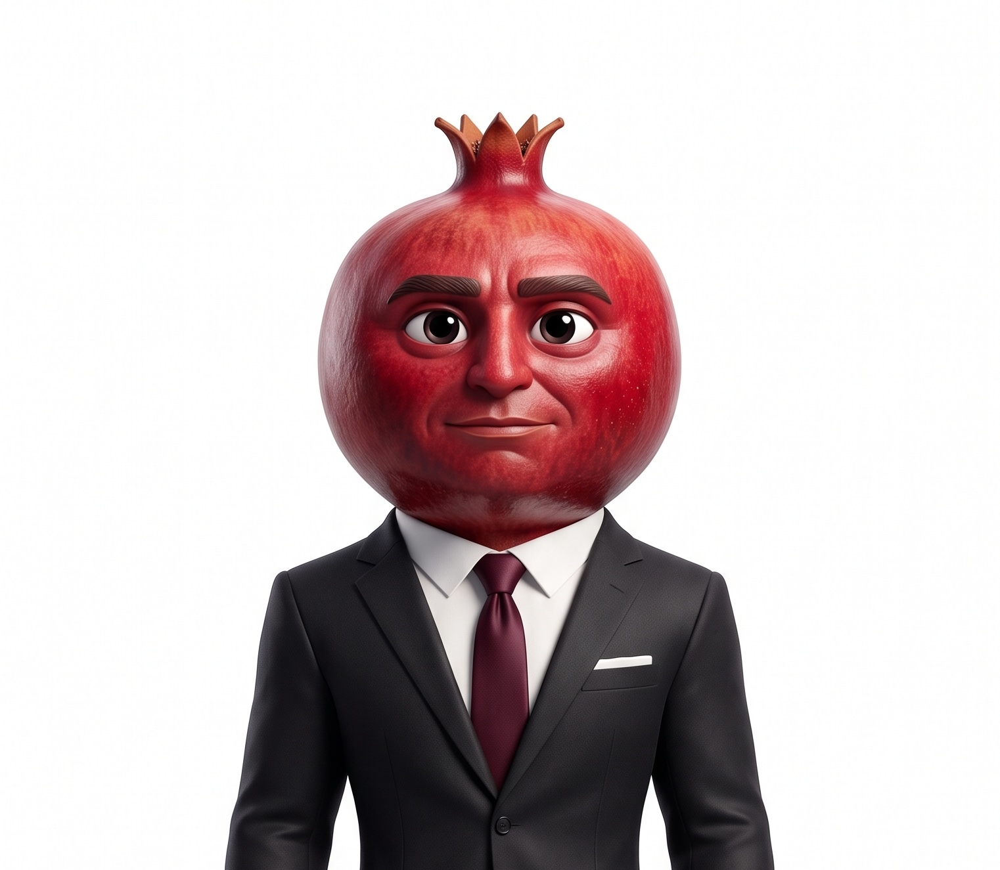
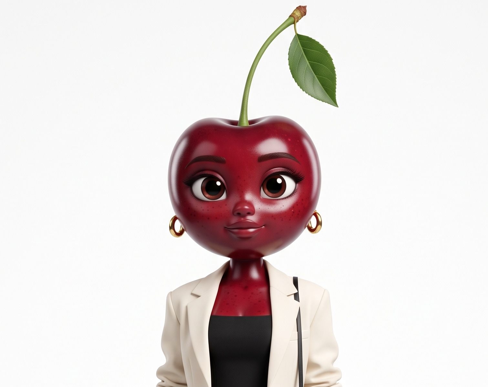
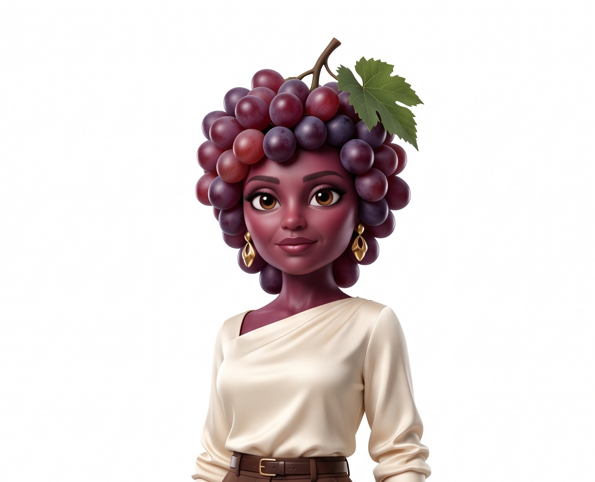
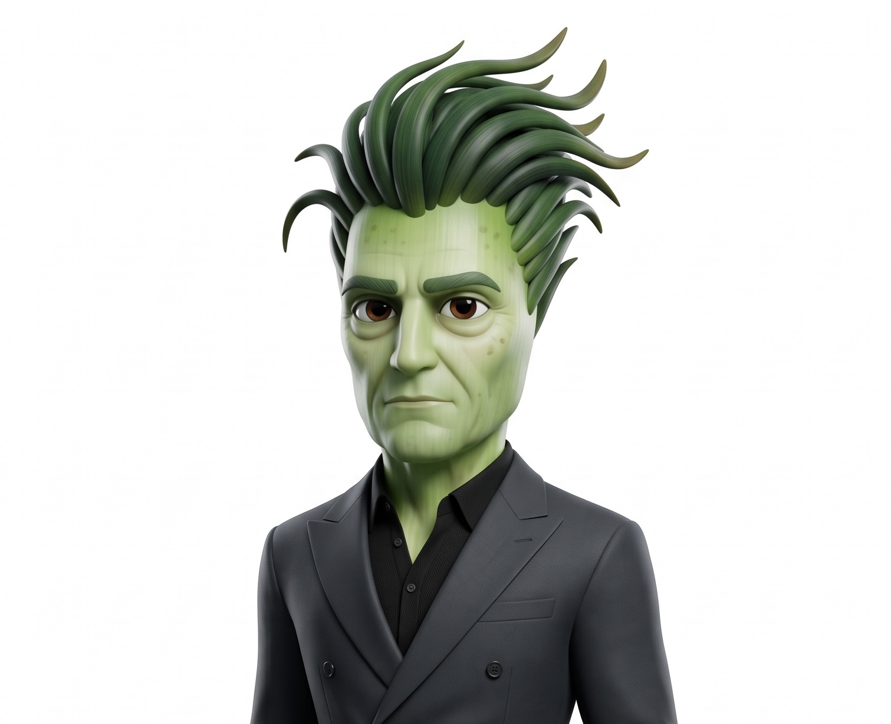
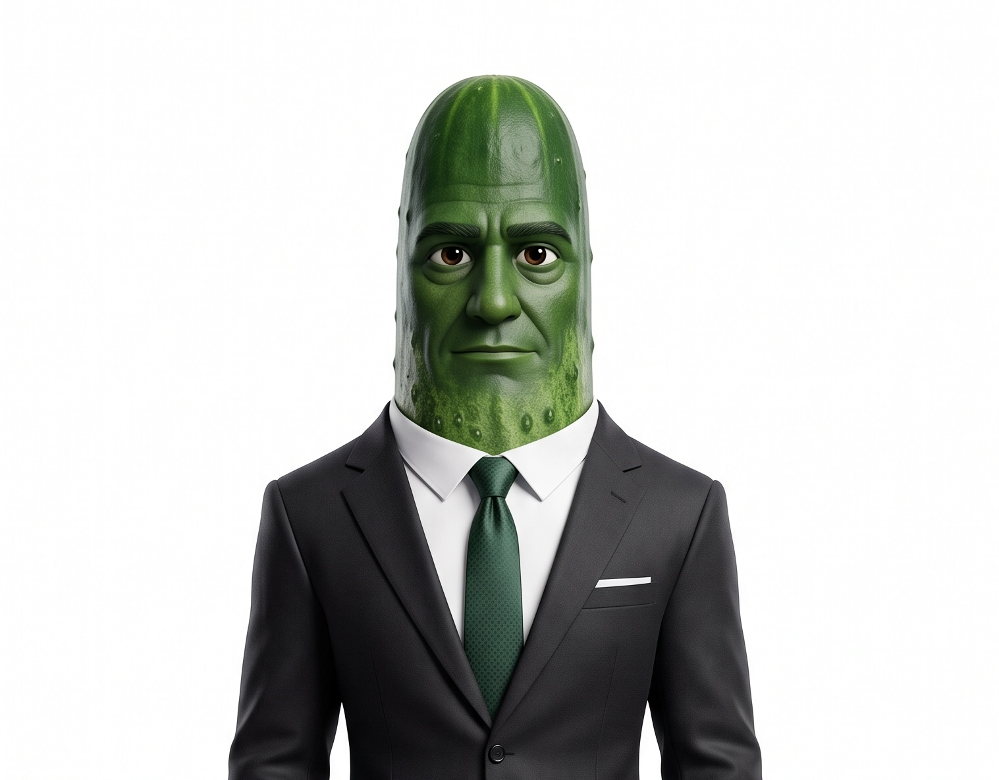

Character Collection
This gallery features eight original characters I created for Fruit Island Turkiye. Each character has a unique personality, visual identity, and role within my stories.

Maydanaz
A parsley-inspired character and one of the central personalities in my Fruit Island Turkiye stories.

Tomat
A tomato-inspired original character with a strong personality and an important role in the Fruit Island Turkiye universe.

Piraz
A leek-inspired character with a distinctive personality and an important role within the story.

Cevdet
An original character created as part of the dramatic relationships and stories in my fictional universe.

Narsu
An original character with her own visual identity, personality, and place within the Fruit Island universe.

Narhun
A bold original character designed to bring another personality and point of view into the story.

Kirnaz
A playful original character whose design and personality help expand the Fruit Island Turkiye cast.

Ozum
A grape-inspired character created to add emotion, personality, and drama to the series.

Yesar
A green-onion-inspired character with a strong presence in the dramatic world of Fruit Island Turkiye.

Yarar
An original character with a distinctive personality and an important role in the dramatic world of Fruit Island Turkiye.